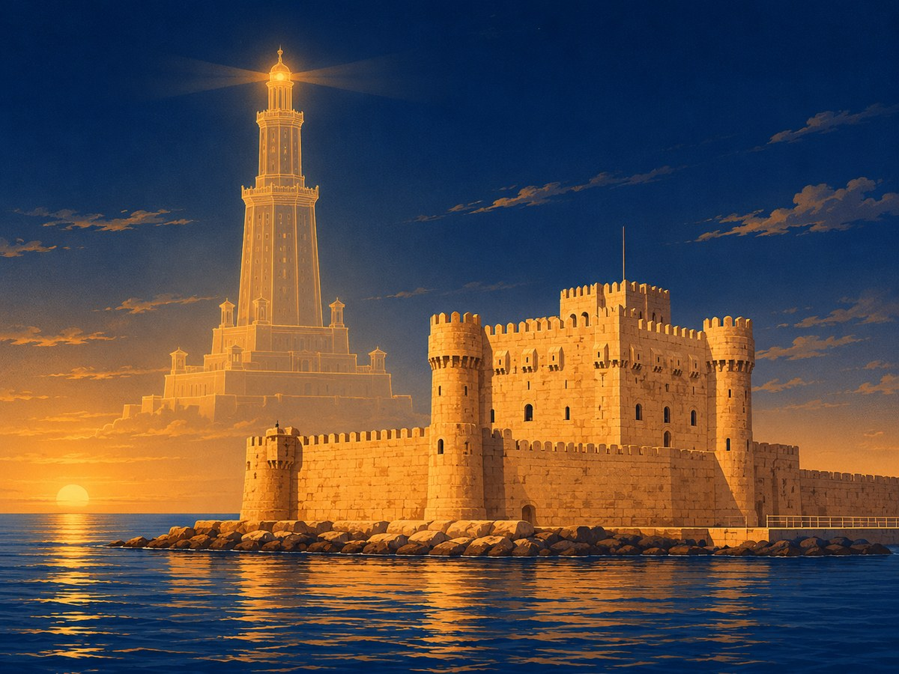
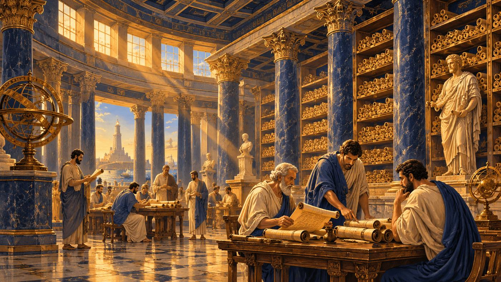
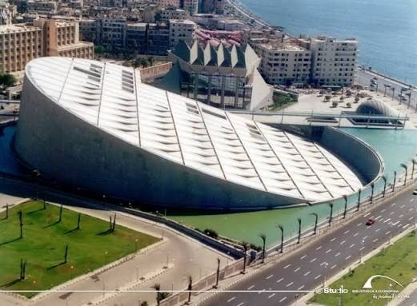
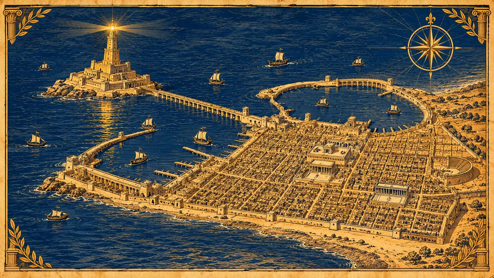
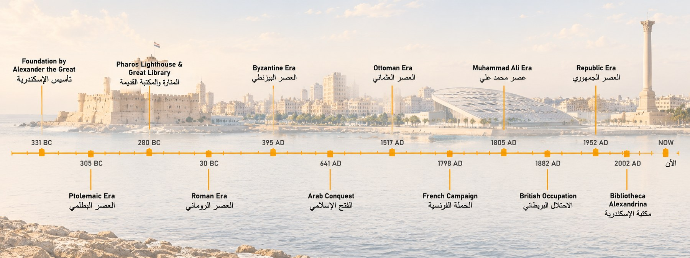

History of Alexandria
Alexandria is one of the few cities in the world whose founder, founding date and original purpose are all known, and whose life has continued without a break for more than 2,300 years.
Why is the History of Alexandria Unique?

Alexandria combines a precise origin, a role as a capital, and an influence on world knowledge that few cities can match.
- More than 2,300 years of continuous urban life.
Alexander the Great founded the city in 331 BC on the Mediterranean coast, opposite the island of Pharos. Its grid plan is traditionally credited to the architect Dinocrates of Rhodes, and the city has been inhabited ever since. - Capital of Egypt for roughly 950 years.
From Ptolemy I, around 305 BC, through Roman and Byzantine rule, Alexandria was Egypt's capital until the Arab conquest of 641 AD, when the seat of government moved inland to Fustat. - A crossroads of peoples and ideas.
Egyptians, Greeks, Jews, Romans, Christians and Muslims, and later Italians, Armenians and Levantines, all shaped the city. Its intellectual influence, from the Library to the Catechetical School, outlived its political role.
From the Ancient Library to Modern Science
Under the early Ptolemies, Alexandria became the leading centre of learning in the Mediterranean world. The Mouseion, a research institution, and its Great Library gathered scholars and texts from across the known world.
Scholars connected with the city include Euclid, who wrote the Elements; Eratosthenes, who estimated the circumference of the Earth around 240 BC; Herophilus, a pioneer of anatomy; Hero, who described early steam-powered and mechanical devices; and Ptolemy, whose Almagest shaped astronomy for more than a thousand years. The Library's decline was gradual, shaped by political turmoil and reduced support over several centuries, rather than a single fire.

An artist's impression of the ancient Library of Alexandria.

The Bibliotheca Alexandrina, inaugurated in 2002 in memory of the ancient Library.
This heritage is part of why nuclear science feels close to home for me. I study at Alexandria University, and from 2017 to 2019 I volunteered at the Planetarium Science Center of the Bibliotheca Alexandrina. The city's tradition of asking how nature works, measuring it and sharing the results is the one I hope to continue through my own work.
Alexandria Across the Eras
Alexandria's history is often split into separate chapters: Greek, Roman, Islamic and modern. Here I follow it as one continuous story, in nine eras, each defined by its rulers, its trade and its place in Egypt and the Mediterranean.

An illustrated map of ancient Alexandria with the Pharos island and its two harbours.
- 331 to 30 BC
Foundation and Ptolemaic Alexandria
Alexander the Great founded the city in 331 BC. Under Ptolemy I and his successors it became Egypt's capital and the Mediterranean's leading centre of learning, home to the Pharos lighthouse, the Mouseion and the Great Library. The era ended with Cleopatra VII.
- 30 BC to 395 AD
Roman Alexandria
Egypt became a Roman province and Alexandria one of the empire's greatest cities, exporting grain to Rome. It had large Greek, Egyptian and Jewish communities, hosted scholars such as Ptolemy, and became an early centre of Christianity. The Serapeum was destroyed in 391.
- 395 to 641
Byzantine Alexandria
A major Christian city and the seat of the Coptic Patriarchate. Philosophers such as Hypatia taught here in the early 400s, and theological disputes shaped the Church. Persian forces held the city from 619 to 629.
- 641 to 969
Arab Conquest and Early Islamic Period
The Arab army under Amr ibn al-As took the city in 641 to 642, and the capital moved inland to Fustat. Alexandria remained a major port, naval base and fortified coastal city under successive Islamic dynasties.
- 969 to 1250
Fatimid and Ayyubid Alexandria
A hub of Mediterranean and Indian Ocean trade and of Islamic learning, with scholars such as al-Silafi. The traveller Ibn Jubayr visited in 1183 and described the Pharos, which was still standing in part.
- 1250 to 1517
Mamluk Alexandria
The city was sacked by a Crusader fleet in 1365 and afterwards strengthened its defences. Sultan Qaitbay built the citadel on the Pharos site in 1477, using stone from the fallen lighthouse.
- 1517 to 1805
Ottoman Alexandria and the French Expedition
After new sea routes to Asia reduced Mediterranean trade, Alexandria shrank to a small town. Napoleon's army landed in 1798, the Battle of the Nile followed, and British and Ottoman forces retook the city in 1801.
- 1805 to 1952
Muhammad Ali Dynasty and Cosmopolitan Alexandria
The Mahmoudiyah Canal, completed in 1820, reconnected the port to the Nile and the city boomed. Greek, Italian, Armenian, Jewish and Levantine communities shaped its culture, and writers such as Cavafy and Durrell made it famous. Alexandria University was founded in the late 1930s, and King Farouk left Egypt from the city in 1952.
- 1952 to today
Alexandria in the Republic of Egypt
Egypt's main seaport and a major industrial and academic centre. The Bibliotheca Alexandrina opened in 2002 in memory of the ancient Library, and the Mediterranean coast to the west now hosts Egypt's first nuclear power plant project at El Dabaa.
From its foundation in 331 BC to today, Alexandria has been a capital, a port and a centre of learning in turn.
The Big Picture

Alexandria across its eras, in one image.